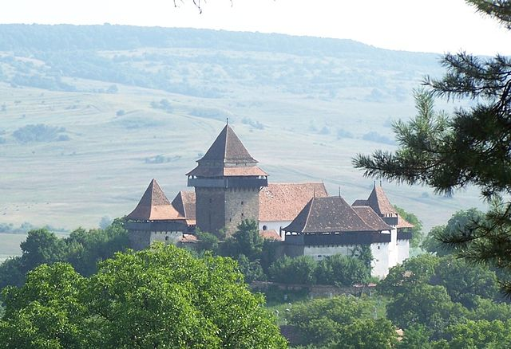

Biserica fortificată din Viscri
Descriere
Biserica evanghelică fortificată din Viscri, comuna Bunești, județul Brașov, a fost construită în secolul XIII pe baza unei vechi bazilici romane datată din secolul al XII-lea.

Ansamblul bisericii evanghelice fortificate format din biserică, incinta fortificată, cu drum de apărare, două turnuri, două bastioane, turn de poartă este monument istoric, cod LMI BV-II-a-A-11843.
Din anul 1999 biserica face parte din patrimoniul mondial UNESCO. Biserica-sala a fost construita de secui si ulterior a fost preluata de sași. Biserica a fost fortificata in secolul al XV-lea si transformata intr-o biserica fortificata cu turnuri, bastioane si doua ziduri de apărare.
Istoric
În Viscri mai dăinuie, bine conservată, una dintre cele mai pitorești și - în pofida dimensiunilor nu prea mari - monumentale cetăți țărănești săsești, ce cuprinde între zidurile sale una dintre puținele biserici-sală romanice ale secolului XIII. Particularitățile monumentului au preocupat pe mulți cercetători iar enigmele lui au putut fi dezlegate abia prin săpăturile întreprinse în 1970-1971 de către arheologul Mariana Dumitrache.
Macheta ansamblului fortificaţiei şi a bisericii
Poziția retrasă a așezării explică și apariția sa relativ târzie în documente. Abia pe la 1400, "Alba ecclesia" (alias Viscri) apare într-un registru al localităților pentru plata impozitului datorat episcopatului, al comitatului de Rupea (Kosd). Pe la 1500, Viscri este enumerată printre comunele libere ale Scaunului de Rupea, cu 51 de gospodării, trei păstori, un dascăl și doi săraci. Aici, ca și în alte comune, vechimea bisericii confirmă că așezarea coloniștilor germani a luat ființă la sfârșitul secolului XII când a fost colonizată și partea apuseană a viitorului Scaun al Rupei.
Interior
Biserica-sală romanică, cum mai există în zona Rupei doar în Homorod (biserica-sală din Criț aparținea deja stilului de trecere de la romanic la gotic), a avut o predecesoare care a fost parțial inclusă în aceast edificiu. Coloniștii germani (care s-au așezat în Viscri ca imigranți după domnia regelui Geza al II-lea, adică după 1162, ca "alii Flandrenses", în ultimul sfert al secolului XII) au găsit pe promontoriul din nord-estul comunei actuale o mică capelă.
Aceasta era construită din calcar alb-verzui, avea formă rectangulară, cu absidă semicirculară spre răsărit, iar unicele podoabe erau pietrele cubice ecarisate ce formau colțurile sălii și începutul absidei, o arcadă semicirculară a intrării sudice. Sala avea un tavan plat, absida o semicalotă (lungimea capelei era de 13,5 m, a sălii de 9,80 m, lățimea sălii în vest de 7,8 m și în est de 8 m).
După piesele descoperite în mormintele dinăuntrul şi din afara capelei, monede şi cercei de tâmplă de la începutul secolului XII, aceasta se datează între 1100-1120, ca aparţinând unui grup de secui ce păzeau în acest punct graniţa statului maghiar feudal, înaintea sosirii coloniştilor germani.